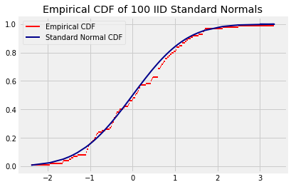

from datascience import *
from prob140 import *
import numpy as np
from scipy import stats
import matplotlib.pyplot as plt
plt.style.use('fivethirtyeight')
%matplotlib inline
from statsmodels.distributions.empirical_distribution import ECDF
---------------------------------------------------------------------------
ModuleNotFoundError Traceback (most recent call last)
Cell In[1], line 2
1 from datascience import *
----> 2 from prob140 import *
3 import numpy as np
4 from scipy import stats
File ~/miniconda3/lib/python3.9/site-packages/prob140/__init__.py:2
1 from .version import __version__
----> 2 from .rebinding import Table, Plot, Plots, JointDistribution
3 from .markov_chains import MarkovChain
5 from .single_variable import emp_dist
File ~/miniconda3/lib/python3.9/site-packages/prob140/rebinding.py:5
3 from .markov_chains import MarkovChain, to_markov_chain
4 from .symbolic_math import *
----> 5 from .plots import Plot_continuous
7 from datascience import *
10 def domain(self, *args):
File ~/miniconda3/lib/python3.9/site-packages/prob140/plots.py:1
----> 1 import ipywidgets as widgets
2 from ipywidgets import interact
3 import matplotlib.pyplot as plt
ModuleNotFoundError: No module named 'ipywidgets'
Data 188, Spring 2024#
Week 4 Seminar Notes#
A. Adhikari#
This seminar has two parts.
First, we’ll step back from maximum likelihood estimation to study a general relation between mean squared error, bias, and variance. We will see how that is related to the calculation justifying the bias-variance tradeoff covered in Data 100.
Next, we’ll take a closer look at the bootstrap confidence intervals covered in Data 8 and 100. We will describe an alternative way of constructing bootstrap confidence intervals that is often better.
Bias and Variance#
Let \(\theta\) be a numerical parameter and let \(\hat{\theta}\) be an estimator of \(\theta\). In what follows, all expectations are taken using the underlying distribution with the parameter value \(\theta\).
As you know, the bias of \(\hat{\theta}\) is a number defined as \(Bias(\hat{\theta}) = E(\hat{\theta}) - \theta\). You can think about this is as the amount by which the estimate exceeds the parameter, when the estimate is averaged over all possible samples. Bias can be negative if the estimator tends to underestimate.
The mean squared error (MSE) of \(\hat{\theta}\) can be decomposed into two recognizable pieces.
because the cross-product term is \(0\). That is,
This is the fundamental bias-variance decomposition of the MSE of an estimator of a fixed numerical parameter.
You can’t “see” this decomposition by simply plotting the parameter and values of the estimate, because the units of all the terms in the decomposition are the square of the units of the original variable. But the decomposition shows that the MSE is the sum of two terms, the first of which measures the squared deviation of the estimator from its mean, and the other measures the squared difference between the mean of the estimator and the parameter.
Ideally, we’d like to minimize both the variance and the bias. An excellent property of the MLE is that it is asympotically unbiased and also asymptotically has the smallest possible variance among unbiased estimators.
Unbiased estimators remove one of the terms in the MSE decomposition but they are not always the best in terms of MSE. For example, an estimator with a small bias and also small variance might have a smaller MSE than an unbiased estimator with a large variance.
The Bias-Variance Decomposition as in Data 100#
The bias-variance decomposition covered in Data 100 has three terms, not two. Let’s see why that is and what the terms are.
The setting is that we have some features represented by a deterministic vector \(x\), and a response that is a deterministic function of the features but with some random noise. We start with a sample of data for which we have both the features and the response. Based on this, we develop a prediction for the response of a new observation.
Assumptions: The new observation
Let \(x\) denote the features of the new observation. The response \(Y\) has the form \(Y = g(x) + \epsilon\) where \(g\) is a deterministic function and \(\epsilon\) is a random error with mean 0 and variance \(\sigma^2\) independent of the original sample.
Thus \(E(Y) = g(x)\) and \(Var(Y) = \sigma^2\). We call \(\sigma^2\) the observation variance.
Assumptions: Our prediction
Our predicted value for this new observation is based on the original sample. We will denote it by \(\hat{Y}(x)\), abbreviated to \(\hat{Y}\).
Since \(\epsilon\) is independent of the original sample, \(\epsilon\) is independent of \(\hat{Y}\).
The model risk is defined as \(E((\hat{Y} - Y)^2)\). This is a mean squared error but it is different from the MSE we decomposed earlier. In that setting, we were estimating a fixed parameter \(\theta\). In our current setting, we are predicting a random quantity \(Y\). So it makes sense that our mean squared error decomposition will be different, and it makes sense that there will be an extra term that arises from the variability in \(Y\).
An initial decomposition of the model risk gives us some insight into this difference.
The cross-product term is \(0\) because \(\epsilon\) and \(\hat{Y}\) are independent and \(E(\epsilon) = 0\). So the first decomposition of the model risk is
The first term on the right hand side is the MSE of \(\hat{Y}\) as an estimator of \(g(x)\), the “true value” of the response at the features \(x\). This puts us back in our original setting of an estimator of a fixed numerical parameter, so our original bias-variance decomposition applies to it. The model risk decomposition becomes
The left hand side is the model risk.
The first term on the right is called the model variance.
The second term on the right is the square of the model bias.
The last term on the right is the observation variance.
This decomposition isn’t affected by how we arrived at the prediction \(\hat{Y}\). In Data 100, we make the assumption that \(g\) is a known function \(f_\theta\) parametrized by an unknown parameter \(\theta\) (which may be a vector), and the predicted value is \(\hat{Y} = f_\hat{\theta}(x)\) where \(\hat{\theta}\) is an estimate of \(\theta\). So the bias-variance decomposition in Data 100 is simply the one above with \(g(x)\) replaced by \(f_\theta(x)\) and \(\hat{Y}\) replaced by \(f_\hat{\theta}(x)\).
Nonparametric Bootstrap and Confidence Intervals#
In Data 8, the bootstrap method assumes that the sample \(X_1, X_2, \ldots, X_n\) is i.i.d. from some distribution but it doesn’t assume any particular parametric form for that distribution. This is the nonparametric bootstrap setting.
Assume that the sample is i.i.d. from a distribution with cdf \(F\). We are interested a parameter associated with \(F\), for example, the median of \(F\). We construct one estimate of this parameter based on our sample. To give ourselves some wiggle room, we need a measure of the variability of our statistic across samples. For this, we need more samples.
Typically, we can’t sample again from \(F\). So we need some way to figure out the variability in our statistic without drawing more samples from \(F\). One way is to use math and probability theory, as we did for the means of large i.i.d. samples. But for complicated statistics, finding the variability analytically is sometimes intractable.
So we resort to computing. As you know, the bootstrap method treats the original sample as a substitute for the population samples \(n\) times at random with replacement from the original sample. This is called resampling. It is easy to resample, so we can repeat the resampling process as many times as we wish.
Formally, we sample from the empirical distribution of the sample. Define the empirical cdf of the sample by
For each \(x\), \(F_n(x)\) is the proportion of sampled elements whose values are are at most \(x\).
By the WLLN, for each \(x\) we have \(F_n(x) \xrightarrow{P} F(x)\). In fact the convergence is stronger but we won’t go into that. The figure below shows that the empirical cdf of the sample is close to the cdf from which the data were drawn, in the case where we have an i.i.d. sample of size 100 from the standard normal distribution.
n=100
sorted_z = np.sort(stats.norm.rvs(size=n))
ecdf = ECDF(sorted_z)
f = ecdf(sorted_z)
for i in range(n-1):
plt.plot([sorted_z[i], sorted_z[i+1]], [f[i], f[i]], color='red', lw=2)
plt.plot([sorted_z[n-1], 3], [1,1], lw=2, color='red', label='Empirical CDF')
plt.plot(np.append(sorted_z, 3), np.append(stats.norm.cdf(sorted_z), 1), lw=2, color='darkblue', label='Standard Normal CDF')
plt.legend()
plt.title('Empirical CDF of '+str(n)+' IID Standard Normals');

Let our statistic be \(T(X_1, X_2, \ldots, X_n)\). The bootstrap procedure can be described as follows, with \(B\) denoting the number of replications of the resampling process.
Do the following \(B\) times:
Draw an i.i.d. sample \(X_1^*, X_2^*, \ldots, X_n^*\) from \(F_n\).
Find \(T(X_1^*, X_2^*, \ldots, X_n^*)\).
This results in \(B\) i.i.d. copies of \(T\), each drawn from \(F_n\). These \(B\) values create a bootstrap empirical distribution of \(T\). If \(n\) and \(B\) are both large, this empirical distribution is likely to be close to the distribution of \(T\).
Percentile Method#
To construct a \(100(1-\alpha)\%\) confidence interval for the parameter, take the \(100(\alpha/2)\) and \(100(1 - \alpha/2)\) percentiles of the bootstrap empirical distribution of \(T\) as the two endpoints.
This was the method used in Data 8 and 100. It has the advantage of simplicity, and it works well if the distribution of \(T\) is roughly symmetric and centered at the parameter. Like all equal tail intervals, it is easily transformed to estimate a monotone function of the parameter.
If \(T\) is biased, however, the percentile method might not be a good choice. For example, if \(T\) tends to underestimate the parameter, then the bootstrap estimate \(T(X_1^*, X_2^*, \ldots, X_n^*)\) will tend to underestimate \(T\), making the problem worse.
Basic or Empirical Bootstrap Method#
Let \(\theta\) be the parameter being estimated. An unsettling aspect of the percentile method is that the original estimate \(\hat{\theta} = T(X_1, X_2, \ldots, X_n)\) isn’t used in the calculation. The basic or empirical bootstrap method uses \(\hat{\theta}\) and attempts to address the problem of bias. This is a common method of calculating bootstrap confidence intervals and has stronger theoretical justification than the percentile method.
In essence, the method approximates the distribution of the error \(\delta = \hat{\theta} - \theta\), instead of the distribution of the estimator \(T\). Let \(\delta_{\alpha/2}\) and \(\delta_{1-\alpha/2}\) be the \(100(\alpha/2)\) and \(100(1-\alpha/2)\) percentiles of the the distribution of \(\delta\). Then
So \((\hat{\theta} - \delta_{1-\alpha/2}, \hat{\theta} - \delta_{\alpha/2})\) is a \(100(1-\alpha)\%\) confidence interval for \(\theta\).
But we don’t know \(\theta\), so we don’t know the distribution of \(\delta = \hat{\theta} - \theta\) nor its percentiles \(\delta_{\alpha/2}\) and \(\delta_{1-\alpha/2}\). The bootstrap allows us to replace these percentiles by their bootstrap empirical approximations.
Calculate the estimate \(\hat{\theta} = T(X_1, X_2, \ldots, X_n)\).
Do the following \(B\) times:
Draw an i.i.d. sample \(X_1^*, X_2^*, \ldots, X_n^*\) from \(F_n\).
Calculate \(\hat{\theta}^* = T(X_1^*, X_2^*, \ldots, X_n^*)\).
Calculate the error \(\delta^* = \hat{\theta}^* - \hat{\theta}\). This is our estimate of \(\delta\).
Let \(\delta_{\alpha/2}^*\) and \(\delta_{1-\alpha/2}^*\) be the \(100(\alpha/2)\) and \(100(1-\alpha/2)\) percentiles of the bootstrap error distribution.
Left end of confidence interval: \(\hat{\theta} - \delta_{1-\alpha/2}^*\)
Right end of confidence interval: \(\hat{\theta} - \delta_{\alpha/2}^*\)
That is, start at \(\hat{\theta}\), the estimate based on the original sample. Subtract the larger of the two error percentiles to get the left end, and the smaller to get the right end.
Notice that \(\delta_{1-\alpha/2}^* = \hat{\theta}_{1-\alpha/2}^* - \hat{\theta}\) so the left end of the interval is \(2\hat{\theta} - \hat{\theta}_{1-\alpha/2}^*\). An analogous argument shows that the right end is \(2\hat{\theta} - \hat{\theta}_{\alpha/2}^*\). This allows the confidence interval to be constructed without calculating each \(\delta^*\).
If the distribution of \(\hat{\theta}^*\) is roughly symmetric about \(\hat{\theta}\) then the percentile method and the empirical bootstrap method produce roughly the same interval.